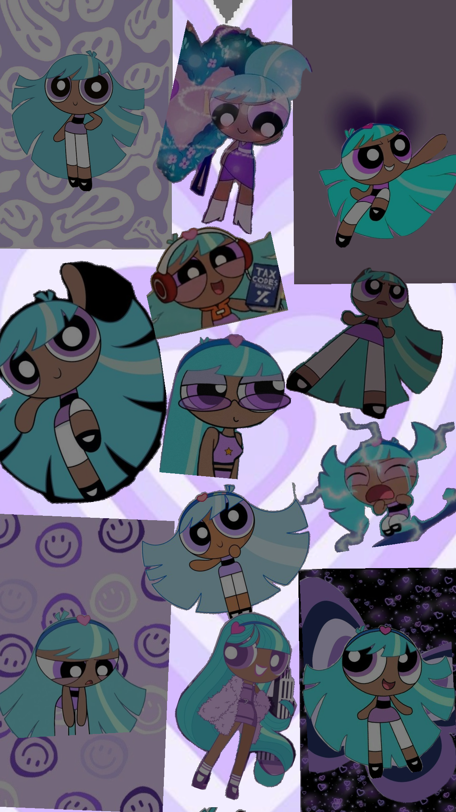
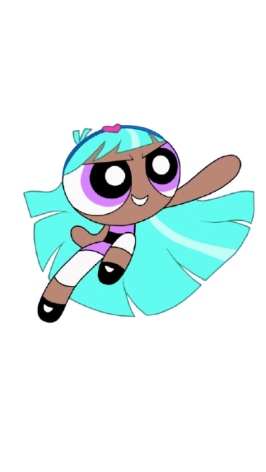

A Estrelinha nasceu quando o Professor Utônio tentou criar uma ajuda extra para as Meninas Superpoderosas, que estavam exaustas de combater o crime sozinhas. Querendo fazer uma nova heroína, ele tentou repetir a fórmula original, mas, por estar nervoso e apressado, acabou colocando ingredientes errados, como poeira, lixo e objetos aleatórios. O resultado foi o nascimento da Estrelinha, uma superpoderosa diferente, grande, forte, mas sem controle total de suas habilidades.
A Estrelinha tinha um corpo maior e desproporcional, olhos grandes, cabelo bagunçado e um vestido roxo. Seu visual era diferente das outras meninas, parecendo inacabada, mas transmitia inocência e doçura.
Estrelinha é extremamente carinhosa e doce, sempre buscando aprovação e afeto. Seu comportamento lembrava o de uma criança inocente, o que a fazia errar, mas suas intenções eram sempre boas. Ela só queria fazer parte da família.
A Estrelinha possuía os mesmos poderes das Meninas Superpoderosas: superforça, voo, visão de calor e velocidade. Porém, por ter sido criada de forma imperfeita, seus poderes eram instáveis e ela não conseguia controlá-los adequadamente.
O maior desafio dela era tentar se encaixar como heroína. Ao tentar ajudar a combater o crime, ela acabava causando confusão por não ter controle e por não entender totalmente o que fazer. Isso a deixava triste e insegura.
Ao perceber que havia causado problemas, Estrelinha se sacrificou para salvar Townsville, enfrentando sozinha um grande grupo de vilões. Seu último ato provou que seu coração era puro. Ela é lembrada como uma verdadeira Menina Superpoderosa.